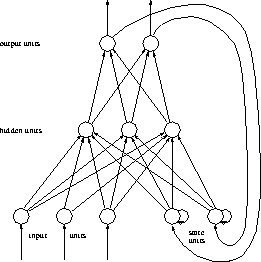

Next:
Working with Partial
Up:
Models of Partial
Previous:
Elman Networks
Extended Hierarchical Elman Networks

Figure:
Extended Elman architecture
Niels.Mache@informatik.uni-stuttgart.de
Tue Nov 28 10:30:44 MET 1995